Dossier de obra
El Grimorio del Archipiélago
Bestiario ilustrado y cartografía mitológica de Chiloé y Calbuco: una obra que no se lee de corrido, se desciende.
1Qué es
El Grimorio del Archipiélago es un archivo digital y un recorrido narrativo por el imaginario de Chiloé. Se entra por la superficie de las islas y se baja, capítulo a capítulo, hasta el lecho del mar: cada criatura, lugar o episodio es una parada del descenso, con su relato fiel al corpus documental, sus variantes y su ilustración. Al fondo esperan el archivo de consulta, el mapa y las fuentes.
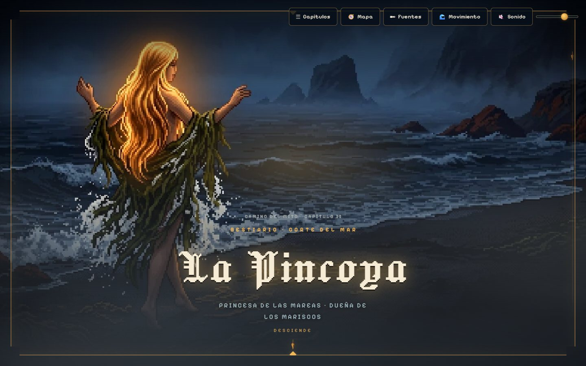
2El recorrido
Diez estaciones del sitio publicado, cada una con su dirección: el dossier está hecho para salirse de él y entrar a la obra.
1La superficie
La portada del descenso: el título, una bajada y la plomada de sonda que invita a bajar.

2El umbral de capítulo
El capítulo se anuncia con su Libro, su cita de anzuelo y un verbo propio: «Abordar».

3Una ficha completa, de arriba a abajo
La unidad que se repite: portal, datos de bestiario, relato fiel al corpus, variantes, nota del archivero y cierre.


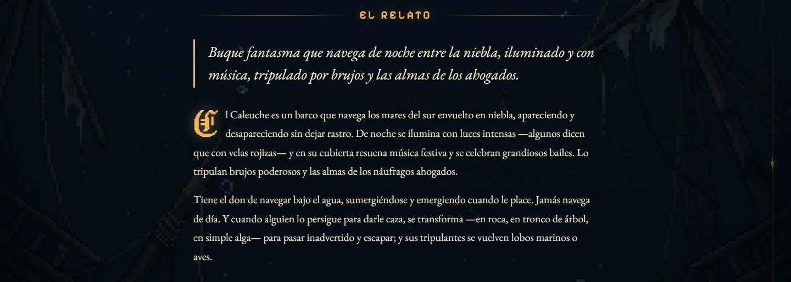


4El mapa del archipiélago
Ocho lugares reales de los relatos, con fuente verificada, sobre geometría oficial. Botón «Mapa».

5La carta de capítulos
Los doce capítulos publicados, por Libro, y las entidades aún selladas, sin un solo enlace muerto.

6El lecho y las puertas del archivo
El fin del descenso y la entrada a la consulta: Bestiario, Mundos, Recta Provincia y Cosmología.
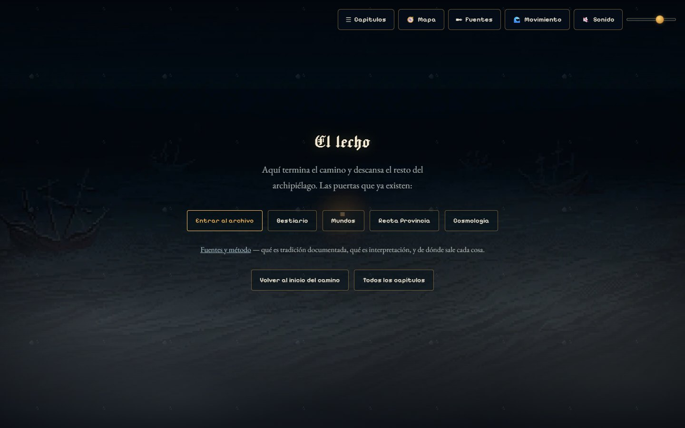
7El expediente de la Recta Provincia
El juicio de Ancud de 1880 desde su fuente primaria: declaraciones y sentencia con su ortografía de época, y el epílogo de la absolución.
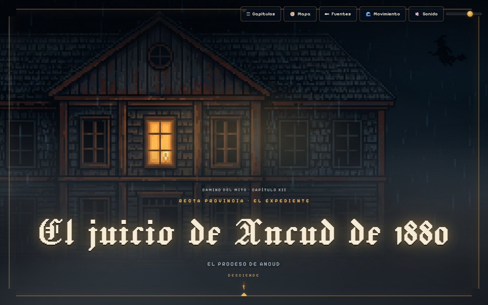

8Fuentes y método
Cada obra citada con su estado y las fichas que respalda. Se abre con el botón «Fuentes».
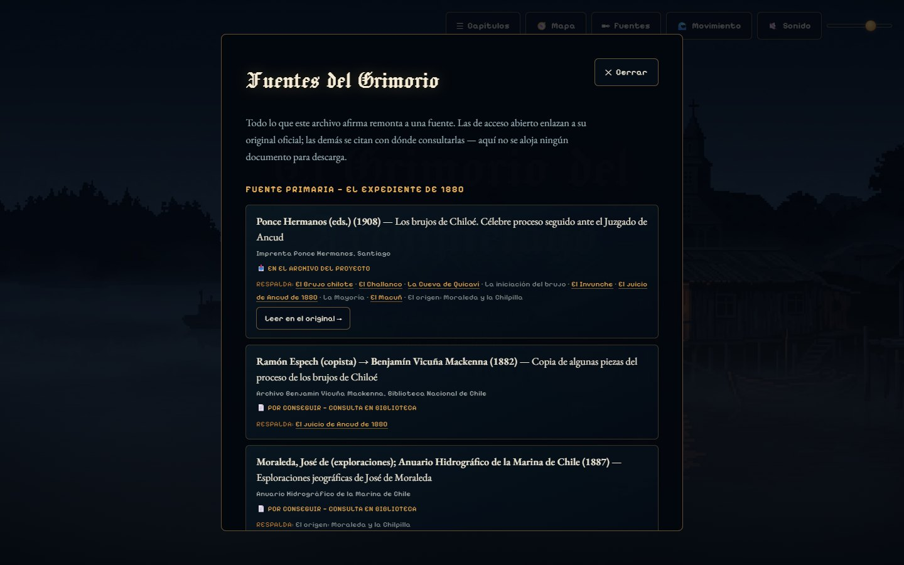
9El verificador de fidelidad
Cada ficha lleva embebido, idéntico al corpus, el bloque de origen de su entidad: se coteja con «ver código fuente».

10La misma ficha en teléfono
La ficha de El Caleuche a 390 píxeles: una columna, sin desplazamiento horizontal.
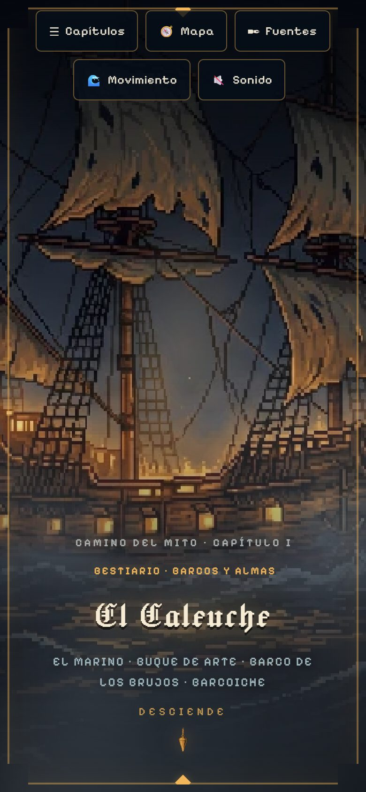
3Dirección de arte
Una sola luz cálida por escena. Todo lo demás es mar, niebla y bronce: la luz lleva la mirada al corazón del relato.
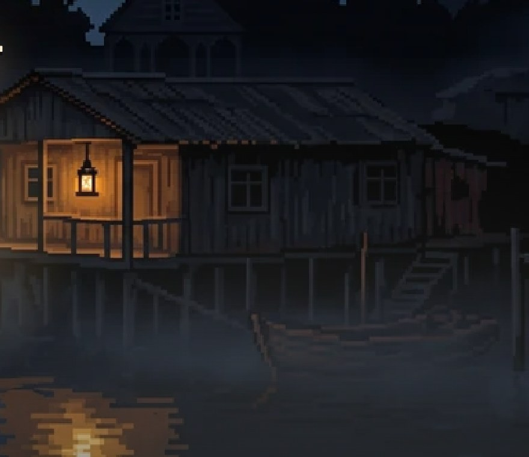
…github.io/grimorio-del-archipielago/
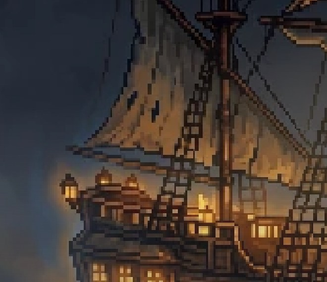
…/caleuche.html
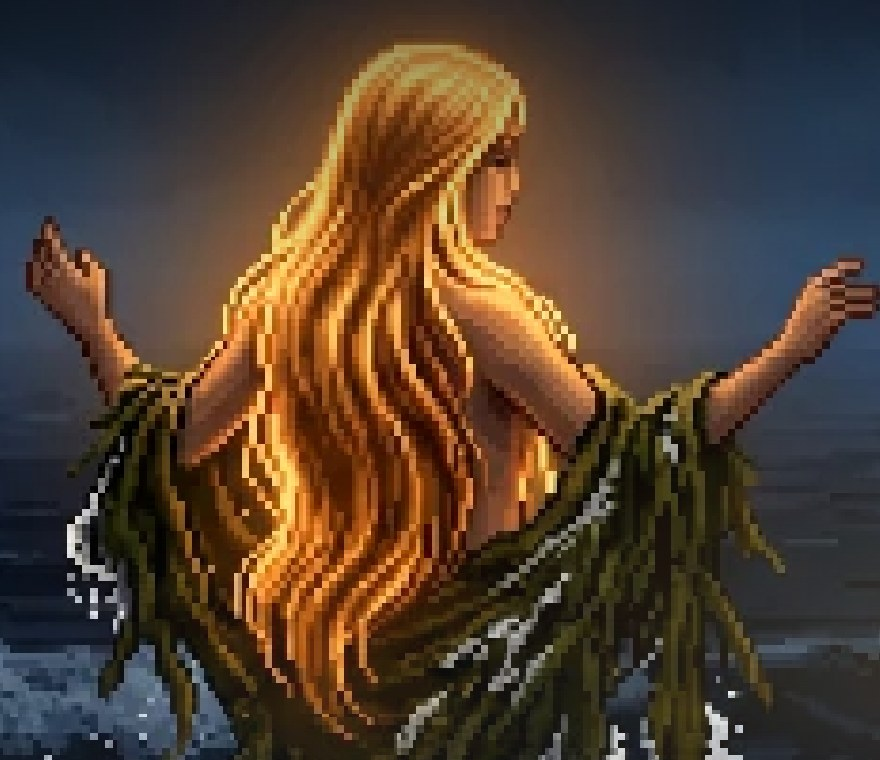
…/pincoya.html
- Tipografía
- Jacquard 24 · nombres; EB Garamond · relato; Pixelify Sans · interfaz.
- Superficies
- Placas de bronce y agua abisal, esquina cortada; nunca papel.
4Cómo está hecho
Dos planos. En el relato, fidelidad absoluta: lo que se lee está palabra por palabra en el corpus del proyecto, que cita sus fuentes. En la forma, libertad declarada: la ilustración es recreación artística contemporánea, nunca iconografía documentada.
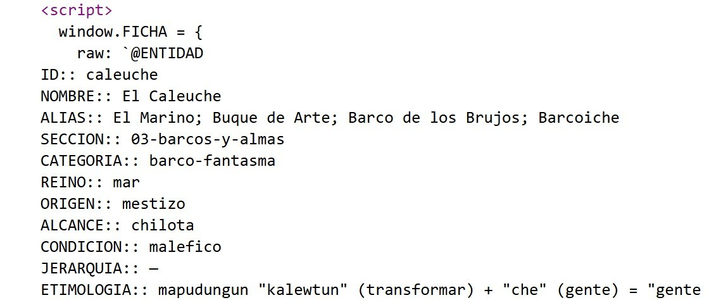
lukas-paredes.github.io/grimorio-del-archipielago/caleuche.html
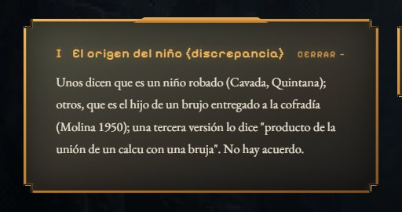
lukas-paredes.github.io/grimorio-del-archipielago/invunche.html
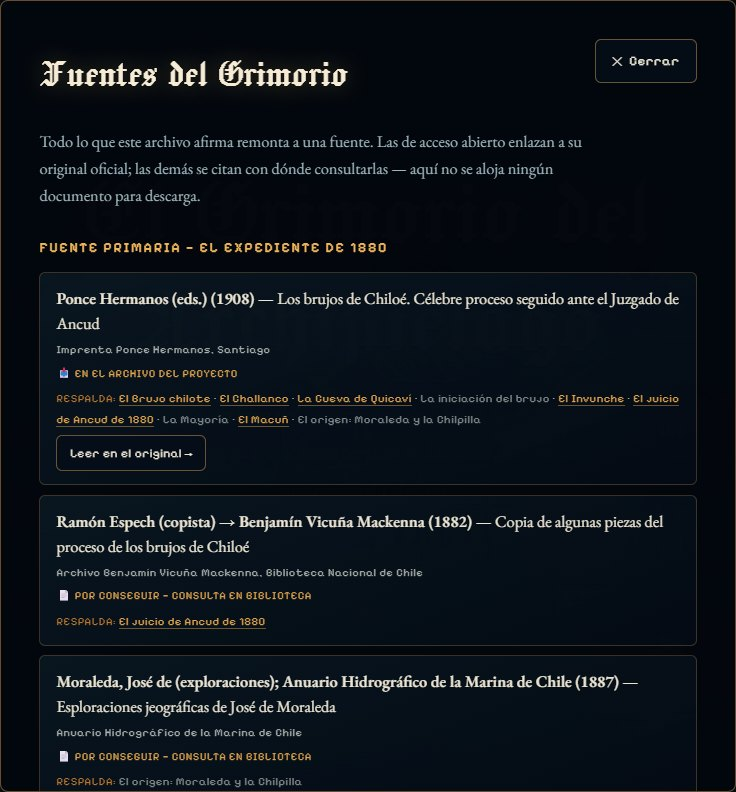
lukas-paredes.github.io/grimorio-del-archipielago/ · botón «Fuentes». Fondo tras el panel: pieza de prototipo.
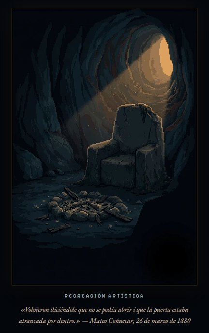
lukas-paredes.github.io/grimorio-del-archipielago/juicio-1880.html
5Especificación de ilustración
| Slot | Proporción | Medida | Rol | Tratamiento | Peso servido |
|---|---|---|---|---|---|
| hero enmarcado | 16:9 | 917 × 512 | Portal a pantalla completa, bajo el marco de bronce | grilla reducida, color pleno | 50 – 77 KB (objetivo ≤ 60) |
| hero a sangre | 16:9 | 1800 × 1005 | Portal a pantalla completa, en resolución de fondo | color pleno | 70 – 155 KB |
| lamina | 2:3 retrato | 565 × 842 | Alternativa al portal, enmarcada sobre el fondo | grilla y paleta reducida | 16 – 55 KB |
| descenso | 9:16 vertical | 1005 × 1800 | Fondo del cuerpo; el descenso en teléfono | color pleno | 96 – 162 KB |
| cierre | 16:9 | 1800 × 1005 | Pantalla final, con su frase propia | color pleno | 85 – 150 KB |
| card | 1:1 | — | Definido, sin producir | — | — |
Zona segura del portal. En teléfono queda a la vista la franja central de la pieza de 917 × 512: unos 270 píxeles en proporción 9:16, unos 220 en una pantalla de 390 × 844.
Paleta obligatoria
6Ficha técnica
- Sitio estático: HTML, CSS y JavaScript clásico; sin frameworks, sin compilación, sin base de datos y sin dependencias de pago.
- Gobernado por datos: las fichas se generan desde el corpus; publicar una entidad no toca el motor.
- Liviano: un capítulo completo se transfiere en 226 a 690 KB, ilustraciones incluidas.
- Accesibilidad verificada: contraste AA, lectura de 17 px o más en teléfono, controles de 44 px, teclado y Escape, movimiento pausable y sonido apagado por defecto.
- Abierto: alojado en GitHub Pages; código, corpus y fuentes en un repositorio público.